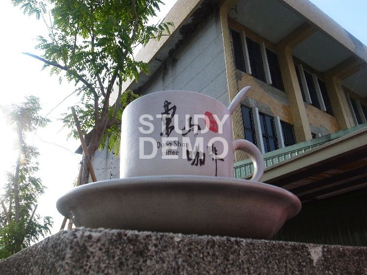

咖啡的好與壞
有發現越來越多咖啡連鎖店一家家開，
顯見咖啡已涉入現代人生活中，
咖啡會如此流行.迷人，那有沒有想過咖啡裡是怎樣的物質呢？
對人體是好與壞呢?!
喝咖啡的好處︰
根據美國俄亥俄州立大學1994年的研究，咖啡因的確能提高清醒度，
能提高細胞內環磷腺?的含量，小劑量能興奮大腦皮層，
振奮精神，改善思維，消除疲勞，加快反應，提昇工作效率。
大劑量則可興奮延腦呼吸中樞和血管運動中樞，
增加呼吸頻率，造成過度刺激，
產生焦慮、興奮、頭痛、失眠、心神不寧。
喝咖啡壞處
成長中的青少年 對咖啡因的興奮作用較敏感，
比較會有心悸..影響睡眠的情形。
咖啡因對有高血壓及心血管疾病的人有強心作用，
但同時也會使心跳加快，血壓增高，
亦容易引起心肌缺氧，對病情的控制不利。
懷孕的婦女過量的咖啡 會增加流產 及 胎兒發育遲緩的機會。
停經後的 婦女與老年人 過多的咖啡因會導致 鈣質的流失..骨質疏鬆症的機會。

東山
大多數人都會想接著講鴨頭吧？然而聞名遐邇東山的咖啡可是台灣三大產地之一唷。海拔介於五百公尺至八百公尺之間的東山地區，日夜溫差差達10度，鄰近的曾文水庫、烏山頭水庫及白河水庫三大水庫，可調節溼度，另外酸鹼度適中的土壤，極為適合咖啡生長，造就當地咖啡飄香，使所生產咖啡具獨特道地的香氣。
這條175號縣道全長20公里，有北、南及東山鄉二坑埔3處入口，不妨找個地方喝杯咖啡，遠眺優美的風景，細細品味一段悠閒愜意的時光。